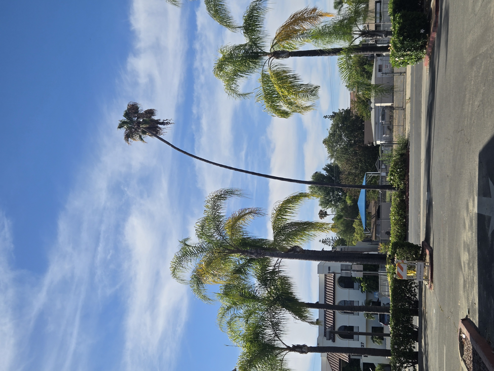

Not every important Old Escondido palm is a Canary Island date palm. Mexican fan palms bring a different kind of streetscape character: taller, leaner, more vertical, and often full of small irregularities that tell the story of how a street has grown around them.


A lean or curve in a palm can come from many ordinary site factors, including light exposure, wind, growing conditions, past maintenance, or changes around the planting area over time. These photos are field observations, not a diagnosis of structural condition or health.
Still, palms growing near streets, sidewalks, parking areas, or buildings deserve practical attention. If a leaning palm raises safety concerns, it should be evaluated in person so the site, trunk, crown, surrounding pavement, and nearby targets can be considered together.
San Diego Palm Protection documents palms like these as part of broader mature palm stewardship work in Old Escondido: paying attention to the palms that shape neighborhood character, helping owners recognize when an in-person look makes sense, and keeping a local record of how these streetscapes change over time. Learn more about Palm Stewardship Resources and the Old Escondido Palm Preservation Initiative.